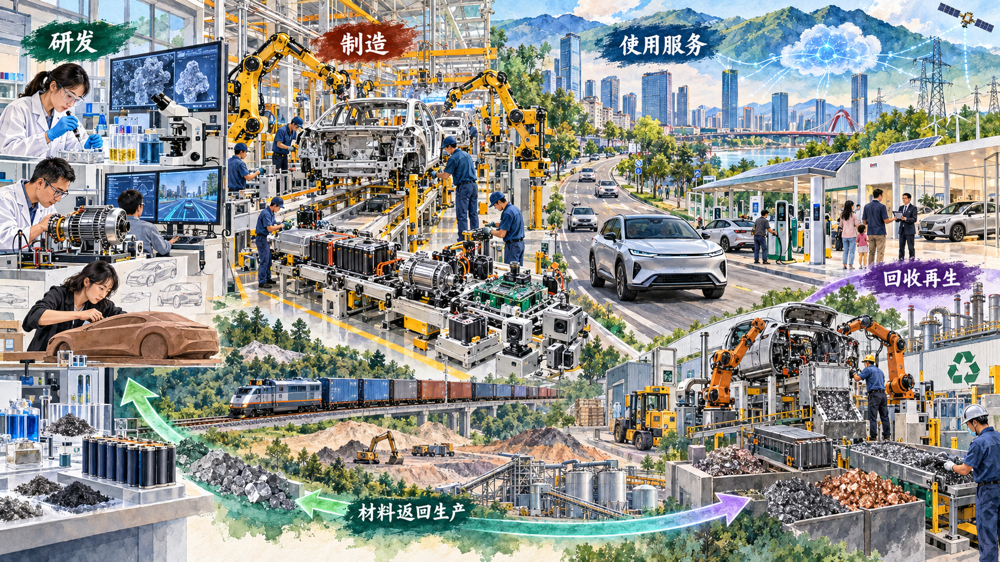
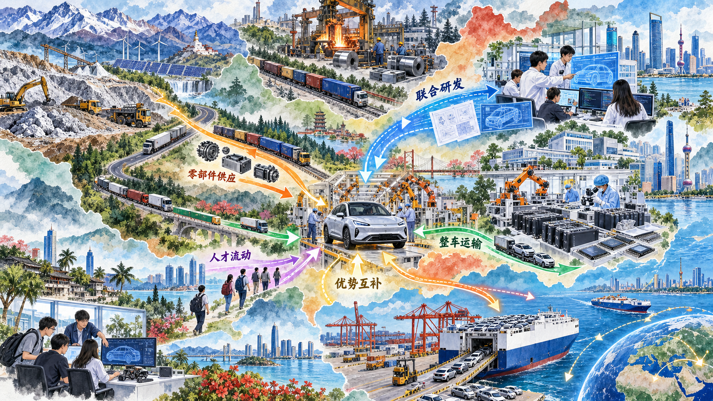
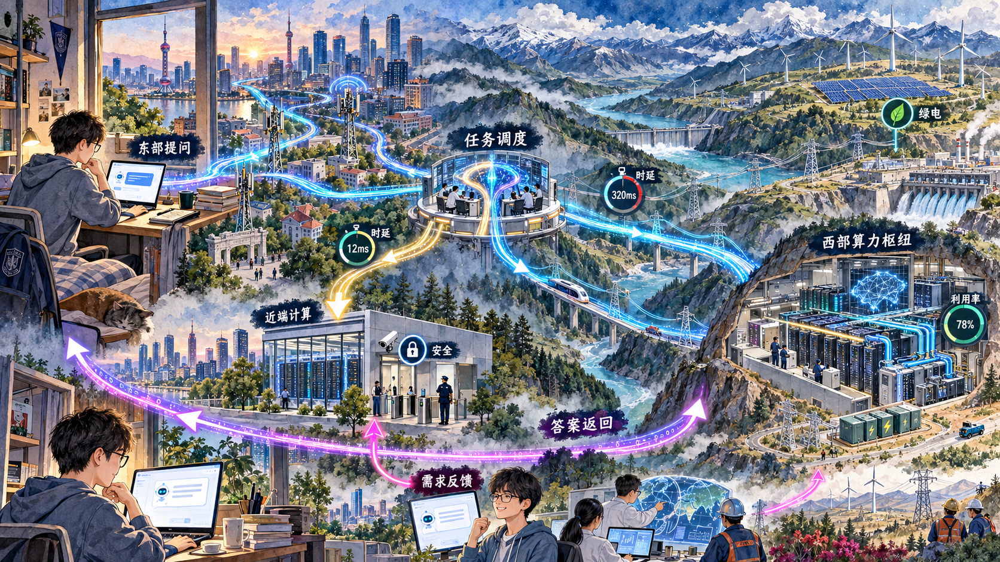

把企业、产业、基础设施和区域组织成系统
现代化经济体系不是若干先进企业的名单，而是产业、市场、收入分配、城乡区域、绿色发展和开放等方面相互联系的系统。本节沿一辆新能源汽车和一次 AI 提问，观察研发、制造、服务、能源、数据和区域分工怎样共同运行。
一、建设现代化产业体系
产业体系的现代化表现为实体经济、科技创新、现代金融和人力资源协同发展。产业链要能衔接上下游，供应链要稳定交付，创新链要把知识转化为技术与产品，价值链要形成品牌、服务和合理收益。
新能源汽车从研发台走向道路运行，要经过材料、电池、电驱、芯片、软件、整车制造、充换电、保险、维修和回收。品牌、标准、物流和数据贯穿全程。任何关键环节的能力不足，都可能影响整车质量、交付和使用体验。

2025 年我国新能源汽车产销分别达到 1662.6 万辆和 1649 万辆，出口 261.5 万辆。规模为产业链协同和技术迭代提供条件，现代化产业体系还要求核心环节能力、质量标准、资源效率、售后服务和循环利用共同提升。
参考资料｜产业链、供应链、创新链和价值链怎样观察同一辆汽车
产业链观察从材料、零部件到整车和服务的行业与技术环节；供应链观察企业之间的采购、生产、库存、物流和交付；创新链观察基础研究、技术开发、工程验证和产品迭代；价值链观察各环节怎样创造价值、形成品牌并分配收益。
同一块动力电池可以同时进入四种视角：它属于新能源汽车产业链的关键环节；其原材料、生产和交付构成供应链；材料体系和管理软件的改进属于创新链；专利、制造、品牌和回收中的收益分配属于价值链。四个概念帮助学生从不同问题进入同一产业系统。
资料来源：国务院办公厅《新能源汽车产业发展规划（2021—2035 年）》；工业和信息化部等七部门《汽车行业稳增长工作方案（2025—2026 年）》。
二、全面推进乡村振兴
建设现代化经济体系，农业农村不能成为薄弱环节。全面推进乡村振兴，要推动产业、人才、文化、生态和组织振兴，提高农业综合生产能力，发展乡村特色产业，促进农村一二三产业融合，并使现代基础设施和公共服务更好进入乡村。
数字技术和新能源汽车产业也会同乡村发展发生联系。充电设施、物流网络和数字平台影响农产品流通与出行成本，县域制造和服务业为劳动力提供新的就业选择。分析乡村产业项目时，要看资源条件、市场需求、农民参与方式、收益联结机制和长期运营能力。
三、促进区域协调发展
区域协调发展不是要求每个地区建立相同产业，而是根据资源禀赋、产业基础和区位条件形成分工协作。新能源汽车的研发、动力电池、芯片、软件、零部件、整车和港口物流分布在多个区域，一辆最终下线的汽车汇集了跨地区投入。

跨区域协作需要统一大市场降低地方保护和交易成本，需要交通、能源和数据基础设施支撑要素流动，也需要各地避免脱离条件重复建设完整产业链。优势互补使区域分工由地理相邻进一步转向技术、供应链和创新网络相连。
案例研究｜一次 AI 提问为什么要跨越数千公里
学生在手机上输入一个问题，看见的只是几秒钟后生成的文字。屏幕背后，通信网络先把请求送入任务调度系统，计算由芯片、服务器、模型软件和数据中心完成，冷却系统带走热量，电网持续供电，结果再沿网络返回终端。
不同任务对位置有不同要求。实时互动、敏感数据和低时延任务更适合在靠近用户的节点处理；大模型训练、高计算量且可远程处理的任务，可以进入具有能源和空间条件的算力枢纽。“东数西算”通过国家算力枢纽和数据中心集群，引导不同类型任务有序布局，并推动算力、网络和能源协同。
西部能源条件不能自动转化为可用算力。数据中心需要稳定电力、网络传输、服务器上架率、运维人才和任务来源。东部也不能把所有任务一律远送，时延、数据安全和业务连续性会影响调度。全国一体化算力网要在供给和需求之间建立可识别、可调度、可结算的连接。

一次 AI 提问因此同时涉及创新发展、绿色发展、区域协调、现代化产业体系和安全约束。数字服务具有真实的物质基础，算法效率、设备能力、能源结构和区域布局共同决定服务质量与成本。
讨论题
- 视频会议、训练大模型、查询教务信息，哪些任务更适合远程调度，哪些更适合本地处理？
- 一所高校建设 AI 教学平台，应自建算力、购买云服务还是采用混合方案？
- 如果西部算力中心电价较低，却缺少稳定任务，问题出在哪个环节？
资料来源：国家发展改革委等部门《关于深入实施“东数西算”工程加快构建全国一体化算力网的实施意见》；国家发展改革委等部门《数据中心绿色低碳发展专项行动计划》；国家数据局全国一体化算力网相关政策资料。
新闻摘录｜单次 AI 任务更节能，数据中心总用电为什么仍在增长
国际能源署 2026 年 4 月发布的报告指出，2025 年全球数据中心用电需求增长 17%，AI 专用数据中心增长更快。与此同时，单次 AI 任务的耗电量快速下降，芯片、模型和数据中心运行效率持续改善。
两种趋势可以同时成立。每次调用消耗的电力减少，如果使用人数、调用次数和任务复杂度增长得更快，总用电仍会上升。AI 智能体还可能为了完成一个用户任务连续调用模型、检索工具和执行程序，使“一个任务”包含多次计算。
数据中心扩张还受到电网接入、变压器、燃气轮机、先进芯片、冷却和审批等物理条件限制。科技企业增加可再生能源采购，并探索核能、地热等供能方式，AI 产业发展由此进一步进入能源系统和基础设施建设。
讨论题
- 手机更省电以后，人们使用手机的总耗电一定下降吗？这同 AI 数据中心有什么共同机制？
- 判断 AI 是否绿色，应比较单次任务耗电、数据中心总用电还是能源结构？
- 如果你为学校 AI 平台制定指标，会怎样同时评价服务效果与能源效率？
资料来源：International Energy Agency, “Data centre electricity use surged in 2025, even with tightening bottlenecks driving a scramble for solutions,” 2026-04-16。中文翻译与节译。